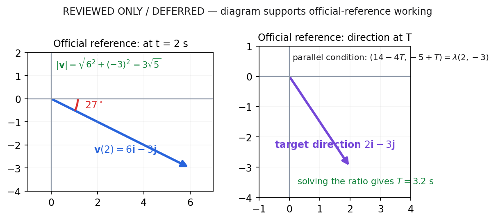
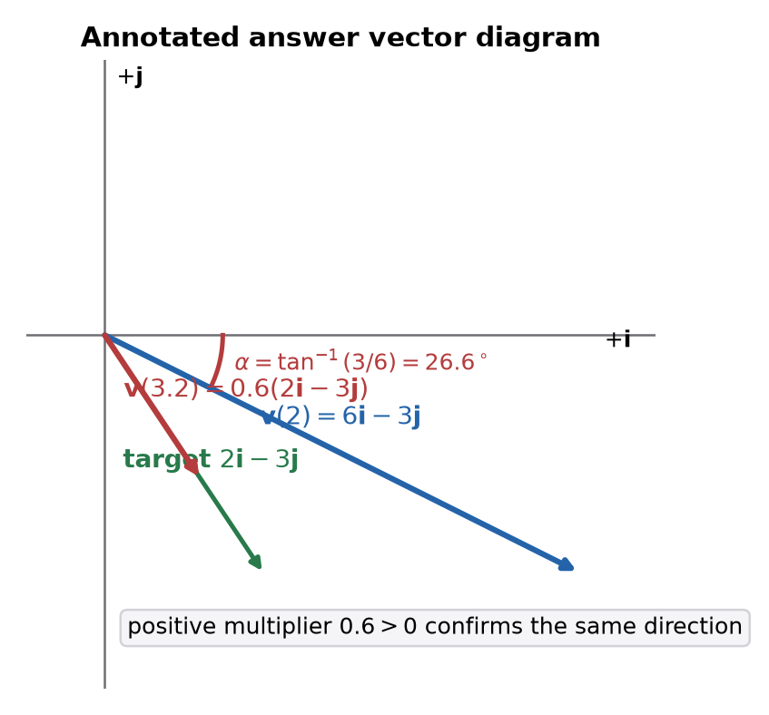

From the official paper. A particle P is moving with constant acceleration \((-4\mathbf i+\mathbf j)\,\mathrm{m\,s^{-2}}\).
At time \(t=0\), P has velocity \((14\mathbf i-5\mathbf j)\,\mathrm{m\,s^{-1}}\).
(a) Find the speed of P at time \(t=2\) seconds. (3)
(b) Find the size of the angle between the direction of \(\mathbf i\) and the direction of motion of P at time \(t=2\) seconds. (3)
At time \(t=T\) seconds, P is moving in the direction of vector \((2\mathbf i-3\mathbf j)\)
(c) Find the value of \(T\) (4)
(Total for Question 3 is 10 marks)
Not covered in the lesson — official-reference reconstruction below.
Teaching visual — official-reference vector geometry.

Exam trigger and stopping point: when you see constant-acceleration vectors, write one SUVAT equation per component. The lesson review remains deferred, so no further live solution is claimed; the completed derivation below is explicitly official-reference working.
Source boundary and correct route. The lesson only reviewed this question—the Tutor said the earlier work was “pretty good”—and no subpart was re-worked live. Everything numerical below is therefore an official-reference reconstruction, not a claim about live Student work. The official data give acceleration \(\mathbf a=-4\mathbf i+\mathbf j\) and initial velocity \(\mathbf u=14\mathbf i-5\mathbf j\), so use \(\mathbf v=\mathbf u+\mathbf a t\), not differentiation of a nonexistent position vector.
Official-reference reconstruction — full derivation. At \(t=2\), \[\mathbf v(2)=(14\mathbf i-5\mathbf j)+2(-4\mathbf i+\mathbf j)=6\mathbf i-3\mathbf j\ \mathrm{m\,s^{-1}}.\] Speed is the magnitude of velocity, not either component and not their sum: \[|\mathbf v(2)|=\sqrt{6^2+(-3)^2}=\sqrt{36+9}=\sqrt{45}=3\sqrt5\ \mathrm{m\,s^{-1}}.\] Numerically this is \(6.708\ldots\ \mathrm{m\,s^{-1}}\), so \(6.7\ \mathrm{m\,s^{-1}}\) is a suitable rounded form.
The assessed method begins inside this work box. Formula before substitution: with constant acceleration, the governing vector equation is \(\mathbf v=\mathbf u+\mathbf at\). Substituting \(t=2\) gives \((14-8)\mathbf i+(-5+2)\mathbf j=6\mathbf i-3\mathbf j\ \mathrm{m\,s^{-1}}\). Speed is then the Euclidean magnitude \(\sqrt{6^2+(-3)^2}=3\sqrt5\ \mathrm{m\,s^{-1}}\). The transition from signed vector to non-negative scalar is essential: components retain direction, whereas speed does not. Check back by squaring the exact speed: \((3\sqrt5)^2=45=6^2+(-3)^2\). A bounded diagnostic for an incorrect positive five in the vertical component is that it would ignore the source’s negative initial \(\mathbf j\)-velocity. This official-reference calculation does not convert the reviewed-only lesson status into a live completion. On a future vector-SUVAT item, form each component first, then take magnitude only after the requested-time velocity is complete.
Checks and mark-route awareness. The first method mark comes from forming velocity at \(t=2\); the second comes from applying Pythagoras to those components; the accuracy mark requires the correct speed from the correct vector. Squaring \(3\sqrt5\) returns \(45\), exactly the component-square sum. The signs also fit the motion: after two seconds the horizontal component remains positive and the vertical component remains negative.
Check the exact result by squaring it: \((3\sqrt5)^2=45=6^2+(-3)^2\). Its decimal value, about \(6.708\), is greater than either component magnitude but less than their sum, which is geometrically plausible. The horizontal component remains positive and the vertical component negative, information needed in part (b) but not part of the speed itself. The final answer is \(3\sqrt5\ \mathrm{m\,s^{-1}}\), with \(6.7\ \mathrm{m\,s^{-1}}\) an acceptable rounded form. Diagnostic: differentiating is unjustified because no position function was supplied. Transfer cue: ‘initial velocity plus constant acceleration’ signals vector SUVAT; ‘speed’ then signals magnitude and units.
Official-reference reconstruction — not produced live. The vector \(6\mathbf i-3\mathbf j\) lies below the positive \(\mathbf i\)-direction because its \(\mathbf i\)-component is positive and its \(\mathbf j\)-component is negative. Let \(\alpha\) be the acute size of the angle between the positive \(\mathbf i\)-direction and the direction of motion. Component geometry gives \[\tan\alpha=\frac{|{-3}|}{6}=\frac12.\]
Therefore \[\alpha=\tan^{-1}\!\left(\frac12\right)=26.565\ldots^\circ,\] which rounds to \(27^\circ\). If direction is instead reported as a standard anticlockwise bearing from positive \(\mathbf i\), the same below-axis vector has angle \(360^\circ-26.565\ldots^\circ=333.435\ldots^\circ\), accepted as \(333^\circ\). These are two conventions describing one vector, not two possible quadrants.
Part (b) legitimately carries \(6\mathbf i-3\mathbf j\) from part (a). Inspect its quadrant before pressing inverse tangent: positive \(i\) and negative \(j\) place the direction below the positive \(i\)-axis. The acute size requested uses \(\tan\alpha=|{-3}|/6=1/2\), so \(\alpha=26.565\ldots^\circ\), rounded to \(27^\circ\). Using absolute side lengths answers ‘size’; retaining signs beforehand identifies the correct quadrant. Check the rounding with \(\tan27^\circ\approx0.51\), close to one half. A diagnostic for using \(6/3\) is that it returns the complementary angle measured from the wrong axis. The full-turn direction \(333^\circ\) is an equivalent convention, not a second geometric solution. When another vector angle is requested, sketch the signs, decide the reference axis, then apply the inverse ratio.
Check and interpretation. Since \(\tan 26.565\ldots^\circ=0.5\), the vertical magnitude is half the horizontal magnitude, matching \(|-3|/6\). An answer of \(-27^\circ\) does not answer the command “size”; \(63^\circ\) would be the complementary angle with \(\mathbf j\), not with \(\mathbf i\). The sign sketch must come before the inverse tangent because a calculator’s principal output alone does not identify orientation.
A geometric check follows from the component ratio: the vertical magnitude is half the horizontal magnitude, so the acute angle must be below \(45^\circ\). This rejects \(63^\circ\), which is the complementary angle to the \(j\)-axis, and rejects a negative response because the command asks for size. The official-reference endpoint is \(27^\circ\), while the lesson remains deferred. Speed \(3\sqrt5\) cannot replace either component in the tangent ratio because magnitude has discarded orientation. Transfer cue: name the axis in the denominator and preserve a small signed sketch beside the calculator result so a principal-angle output cannot choose the wrong reference.
Official-reference reconstruction — full set-up. At time \(T\), constant acceleration gives \[\mathbf v(T)=(14-4T)\mathbf i+(-5+T)\mathbf j.\] “Moving in the direction of \(2\mathbf i-3\mathbf j\)” means the velocity components have the same ratio; it does not mean the velocity equals that particular vector. Hence \[\frac{14-4T}{-5+T}=\frac{2}{-3}.\]
Cross-multiply carefully: \[-3(14-4T)=2(-5+T),\] so \[-42+12T=-10+2T,\qquad 10T=32,\qquad T=3.2.\] The ratio method earns the direction marks because it eliminates the unknown positive scale factor. An equivalent route is \(\mathbf v(T)=\lambda(2\mathbf i-3\mathbf j)\) and solving the two component equations for \(T\) and \(\lambda\).
Orientation check. Substitution gives \[\mathbf v(3.2)=1.2\mathbf i-1.8\mathbf j=0.6(2\mathbf i-3\mathbf j).\] The scale factor \(0.6\) is positive, so the velocity is in the stated direction, not merely parallel in the opposite orientation. Also \((-1.8)/(1.2)=-3/2\), confirming the ratio exactly. Setting the components equal to \(2\) and \(-3\) would wrongly impose a particular speed.
For part (c), rebuild the time-dependent velocity from source givens inside the solution: \(\mathbf v(T)=(14-4T)\mathbf i+(-5+T)\mathbf j\). ‘In the direction of’ means a positive scalar multiple, so write \(\mathbf v(T)=\lambda(2\mathbf i-3\mathbf j)\) with \(\lambda>0\), or equate component ratios. Cross-multiplication gives \(-3(14-4T)=2(-5+T)\), then \(10T=32\) and \(T=3.2\ \mathrm s\). The difficult transition is not to set components equal to 2 and -3, which would prescribe magnitude as well as direction. Transfer recognition: a target vector that specifies direction but not speed calls for a scalar multiplier or component ratio, never equality to its printed component magnitudes. This remains official-reference working under the deferred source boundary.
Use substitution into the time-dependent velocity as the final strategy because the equation solved in the previous stage guaranteed parallel components but did not by itself guarantee the requested orientation. The governing representation is still \(\mathbf v(T)=(14-4T)\mathbf i+(-5+T)\mathbf j=\lambda(2\mathbf i-3\mathbf j)\), with the extra mechanical condition \(\lambda>0\). At \(T=3.2\), substitution gives \(\mathbf v(3.2)=1.2\mathbf i-1.8\mathbf j\). Comparing either component gives \(\lambda=1.2/2=(-1.8)/(-3)=0.6\), so both equations agree and the multiplier is positive. This is the difficult transition from mere parallelism to ‘in the direction of’: a negative common multiplier would satisfy the cross-multiplied ratio while pointing along \(-2\mathbf i+3\mathbf j\), the opposite ray. A bounded diagnostic is therefore to test the sign of \(\lambda\), not to attribute an unsupported error to the learner; this question was deferred and the completion remains official-reference working. The component ratio \(-1.8/1.2=-3/2\) supplies a second check, while inserting \(T=3.2\) into the two scalar equations, \(14-4T=2\lambda\) and \(-5+T=-3\lambda\), verifies the earlier elimination without dividing by a zero component. The endpoint is \(T=3.2\ \mathrm s\): seconds are required because \(T\) is a time measured from \(t=0\), and positivity is physically admissible. Recognition cue: whenever a vector prompt says ‘in the direction of’ rather than merely ‘parallel to’, introduce a scalar multiplier, solve the component condition, and finish by proving that multiplier is positive.
Annotated answer diagram.
